Generative Adversarial Network(GAN)
Generative Adversarial Network(GAN)
detect0530@gmail.com
生成器
具体来说，在模型输入时会将一个随机变量 z 与原始输入 x 一并输入到模型中，这个变量是从随机分布中采样得到。输入时可以采用向量拼接的方式将 x 和 z 一并输入。
我们预想训练一个预测游戏目标游走的模型，如果用传统的监督学习，结果可能会是的十分模糊的甚至游戏中的角色消失、出现残影的，造成该问题的原因是，我们监督学习中的训练数据对于同样的转角同时存储有角色向左转和向右转两种输出。当我们在训练的时候，对于一条向左转的训练数据，网络得到的指示就是要学会游戏角色向左转的输出。同理，对于一条向右转的训练数据，网络得到的指示就是学会角色向右转的输出。但是实际上这两种数据可能会被同时训练，所以网络就会学到的是“两面讨好”。当这个输出同时距离向左转和向右转最近，网络就会得到一个错误的结果———— 向左转是对的，向右转也是对的。
传统过的监督学习，只会让model输出一个结果，但是很多时候，我们希望模型有一些随机性（在有多个合理可能性时）。于是我们让网络有概率的输出一切可能的结果，或者说输出一个概率的分布，而不是原来的单一的输出，如图 8.4 所示。当我们给网络一个随机分布时，网络的输入会加上是一个 z，这时输出就变成了一个非固定的分布，其包含了向左转和向右转的可能。（这样网络就可以学到把输入的随机分布和输出的随机分布建立联系，而不是单一的输出）。
我们通过让机器生成动画人物的面部来形象地介绍 GAN，我们首先从正态分布中采样得到一个向量 z，并输入到生成器中，生成器会给我们一个对应的输出——一个动漫人物的脸。我们聚焦一下生成器输出一个动漫人物面部的过程。其实很简单，一张图片就是一个高维的向量，所以生成器实际上做的事情就是输出一个高维的向量，比如是一个 64×64 的图片（如果是彩色图片那么输出就是 64×64×3）。当输入的向量 z不同的时候，生成器的输出就会跟着改变，所以我们从正态分布中采样出不同的 z，得到的输出 y 也就会不同，动漫人脸照片也不同。当然，我们也可以选择其他的分布，但是根据经验，分布之间的差异可能并没有非常大。我们这里选择正态分布是因为其简单且常见，而且生成器自己会想方设法把这个简单的分布对应到一个更复杂的分布。所以我们后续的讨论都以正态分布为前提。
判别器
在 GAN 中，除了生成器以外，我们要多训练一个判别器（discriminator），其通常是一个神经网络。判别器会输入一张图片，输出一个标量，其数值越大就代表现在输入的图片越像是真实的动漫人物的图像。判别器从本质来说与生成器一样也是神经网络，是由我们自己设计的，可以用卷积神经网络，也可以用 Transformer，只要能够产生出我们要的输入输出即可。当然对于这个例子，因为输入是一张图片，所以选择卷积神经网络，因为其在处理图像上有非常大的优势。
生成器与辨别器的训练过程
训练判别器
下面，我们从算法角度来解释生成器和判别器是如何运作的。生成器和判别器是两个网络，在训练前我们要先分别进行参数初始化。训练的第一步是固定生成器，只训练判别器。因为生成器的初始参数是随机初始化的，所以它什么都没有学习到，输入一系列采样得到的向量给它，它的输出肯定都是些随机、混乱的图片，就像是坏掉的老式电视收不到信号时的花屏一样，与真实的动漫头像完全不同。同时，我们会有一个很多动漫人物头像的图像数据库，可以通过爬虫等方法得到。我们会从这个图库中采样一些动漫人物头像图片出来，来与生成器产生出来的结果对比从而训练判别器。判别器的训练目标是要分辨真正的动漫人物与生成器产生出来的动漫人物间的差异。具体来说，我们把真正的图片都标 1，生成器产生出来的图片都标 0。接下来对于判别器来说，这就是一个分类或回归的问题。如果是分类的问题，我们就把真正的人脸当作类别 1，生成器产生出来的图片当作类别 2，然后训练一个分类器。如果当作回归的问题，判别器看到真实图片就要输出 1，生成器的图片就要输出 0，并且进行 0-1 之间的打分。总之，判别器就学着去分辨这个真实图像和产生出来的图像间的差异。
其实就是一挺简单的分类问题。
训练生成器
我们训练完判别器以后，接下来第二步，固定判别器，训练生成器。训练生成器的目的就是让生成器想办法去骗过判别器，因为在第一步中判别器已经学会分辨真图和假图间的差异。生成器如果可以骗过判别器，那生成器产生出来的图片可能就可以以假乱真。具体的操作如下：首先生成器输入一个向量，其可以来源于我们之前介绍的高斯分布中采样数据，并产生一个图片。接着我们将这个图片输入到判别器中，判别器会给这个图片一个打分。这里判别器是固定的，它只需要给更“真”的图片更高的分数即可，生成器训练的目标就是让图片更加真实，也就是提高分数。
在这一步里，我们固定判别器去更新生成器。
对于真实场景中生成器和判别器都是有很多层的神经网络，我们通常将两者一起当作一个比较大的网络来看待，但是不会调整判别器部分的模型参数。因为假设要输出的分数越大越好，那我们完全可以直接调整最后的输出层，改变一下偏差值设为很大的值，那输出的得分就会很高，但是完全达不到我们想要的效果。所以我们只能训练生成的部分，训练方法与前几章介绍的网络训练方法基本一致，只是我们希望优化目标越大越好，这个与之前我们希望损失越小越好不同。当然我们也可以直接在优化目标前加“负号”，就当作损失看待也可以，这样就变为了让损失变小。另一种方法，我们可以使用梯度上升进行优化，而取代之前的梯度下降优化算法。
总结一下，GAN 算法的两个步骤。步骤一，固定生成器训练判别器；步骤二，固定判别器训练生成器。接下来就是重复以上的训练，训练完判别器固定判别器训练生成器。训练完生成器以后再用生成器去产生更多的新图片再给判别器做训练。训练完判别器后再训练生成器，如此反覆地去执行。当其中一个进行训练的时候，另外一个就固定住，期待它们都可以在自己的目标处达到最优。
最后不断迭代上述过程，可以比较好的训练出和目标接近的生成式模型，模型的输出和嵌入的随机分布一一对应，由此如果把两张图片对应的随机分布z取mid作为新的输入，那么model输出的图片特征也会鉴于那两张图片之间。
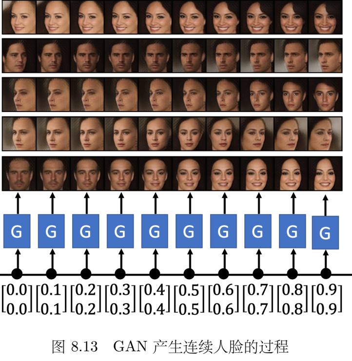GAN理论介绍
我们把把生成器生成出来的图片视为，把原始数据记作，我们希望经过训练的效果是让和尽可能的接近。
有两个类别的数据，训练一个二分类的分类器，训练后就等同于是解了这个优化问题。而图中红框里面的数值，它本身就和 JS 散度有关。或许最原始的 GAN 的文章，它的出发点是从二分类开始的，一开始是把判别器写成二分类的分类器然后有了这样的目标函数，然后再经过一番推导后发现这个目标函数的最大值和 JS 散度是相关的。
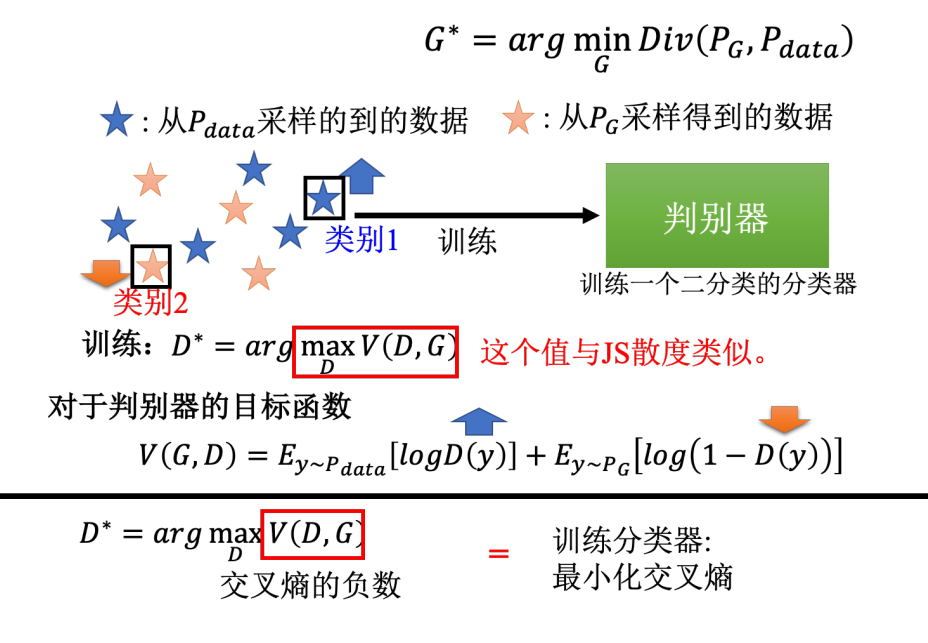这里，判别器就是在训练一个 0、1 分类的分类器，但是因为这两组数据差距很小，所以在解决这个优化问题时，就很难让目标函数 V 达到最大值。但是当两组数据差距很大时，也就是蓝色的星星和红色的星星并没有混在一起，那么就可以轻易地把它们分开。当判别器可以轻易把它们分开的时候，目标的函数就可以变得很大。所以当两组数据差距很大的时候，目标函数的最大值就可以很大。
我们再来看下计算生成器 + 判别器的过程，我们的目标是要找一个生成器去最小化两个分布 和 的差异。这个差异就是使用训练好的判别器来最大化它的目标函数值来实现。最小和最大的 MinMax 过程就像是生成器和判别器进行互动，互相“欺骗”的过程。
WGAN算法
因为要进行 MinMax 操作，所以 GAN 是很不好训练的。我们接下来介绍一个 GAN训练的小技巧，就是著名的Wasserstein GAN（Wasserstein Generative Adversarial Network）。
传统的JS散度问题很大，因为我们要比较的分布都是超级高维空间的低维流形。
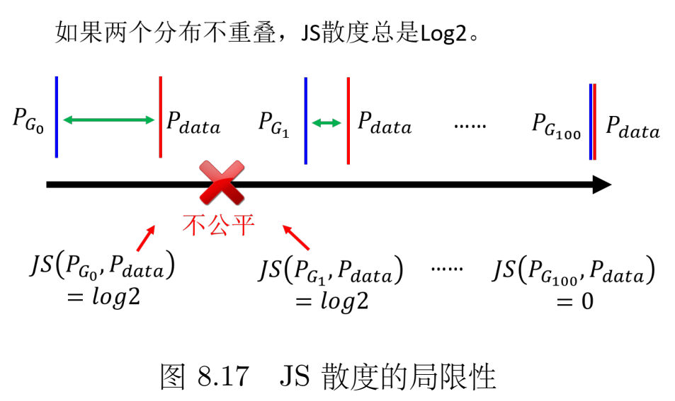所以以上的问题就会对于 JS 分布造成以下问题：首先，对于两个没有重叠的分布，JS 散度的值都为 ，与具体的分布无关。就算两个分布都是直线，但是它们的距离不一样，得到的 JS 散度的值就都会是 。那么JS散度失效，整个GAN就不用看了。
于是我们跟换两个分布的比较函数，就有了 Wasserstein，或使用 Wasserstein 距离的想法。Wasserstein 距离的想法如下，假设两个分布分别为 P 和 Q，我们想要知道这两个分布的差异，我们可以想像有一个推土机，它可以把 P 这边的土堆挪到 Q 这边，那么推土机平均走的距离就是 Wasserstein 距离。
我们定义所有上述的推土机走的距离的最小值为 Wasserstein 距离。当使用 WGAN 时，使用 Wasserstein 距离来衡量分布间的偏差的时候，其实就制造了类似的效果。本来两个分布 和 距离非常遥远，你要它一步从开始就直接跳到结尾，这是非常困难的。但是如果用 Wasserstein 距离，你可以让 和 慢慢挪近到一起，可以让它们的距离变小一点，然后再变小一点，最后就可以让它们对齐在一起。所以这就是为什么我们要用 Wasserstein 距离的原因，因为它可以让我们的生成器一步一步地变好，而不是一下子就变好。
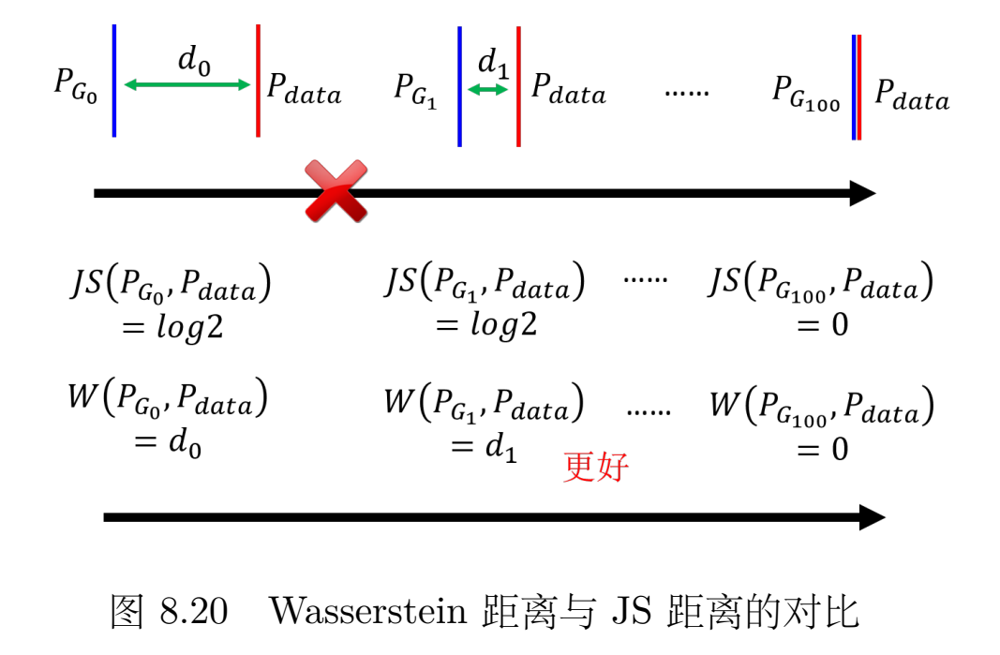这样一来，用Wasserstrin距离就能很好的反应两个分布的差异，且在迭代过程中，可以有效的评估生成器是否进步等好坏。
Wasserstein距离如何计算？
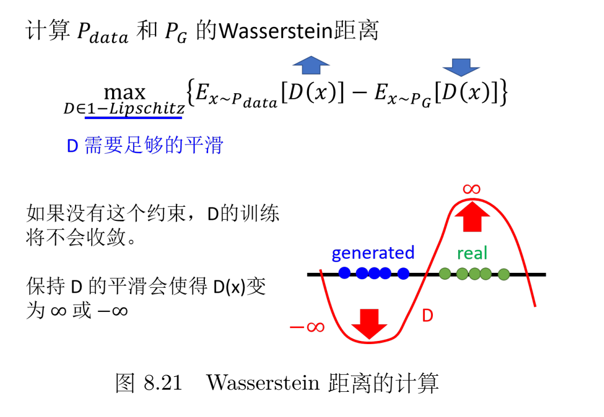我们用nn拟合一个函数，对原始数据抽样出的点，判别器输出越大越好；对生成器生成的数据抽样出的点，判别器输出越小越好。
此外还要有一个限制，函数必须是一个函数（斜率是有上限的，足够平滑，变化不剧烈）。如果没有这个限制，当没有重叠的时候，让一边无限大，一边无限小，目标函数根本不收敛。所以，我们要求是一个函数，保证左右不能无线大或者无限小，这样就可以保证目标函数是收敛的。
简而言之，当判别器够平滑的时候，假设真实数据和生成数据的分布距离比较近，那就没有办法让真实数据的期望值非常大，同时生成的值非常小。因为如果让真实数据的期望值非常大，同时生成的值非常小，那它们中间的差距很大，判别器的更新变化就很剧烈，它就不平滑了，也就不是 了。
于是接下来的问题就变成了如何使得判别器函数满足 的条件。
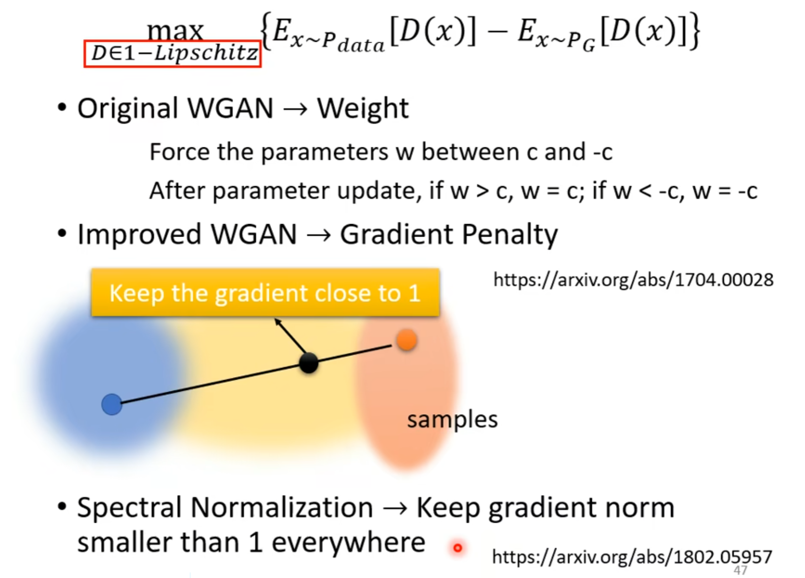图中，三种方法，详见对应的arxiv论文。
训练GAN的难点与技巧
GAN实际上很难train起来，因为GAN的Generator和Discriminator是相互训练的，只要一方出点什么问题，那么多半就train不下去了。Generator and Discriminator need to match each other.
Tips for GAN
所以 GAN 本质上它的训练仍然不是一件容易的事情，当然它是一个非常重要的前瞻技术。有一些训练 GAN 的小技巧，例如 Soumith、DCGAN、BigGAN 等等。大家可以自己看看相关文献进行尝试。
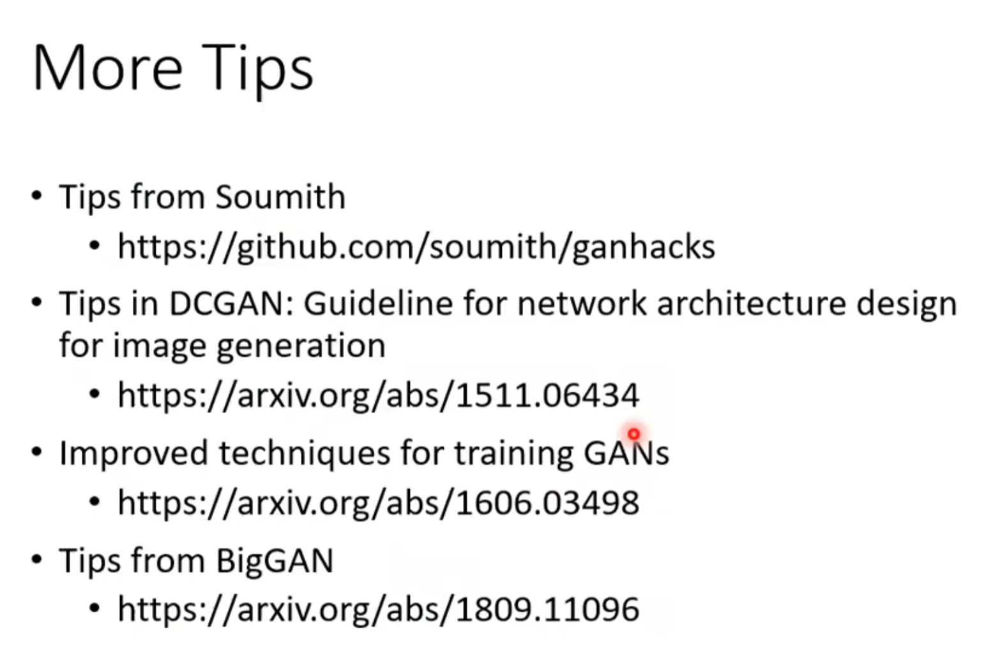GAN for Sequence Generation
GAN在文字生成领域很难。如果解码器的参数有一点小小的变化，那它现在输出的分布也会有小小的变化，那因为这个变化很小，所以argmax的最优token不太会变动，进而对于输出的词元不会有很大的影响。那么对于判别器来说，它输出的分数是没有变化的，所以根本没法计算微分，也没办法做梯度下降。（注意：在生成图片任务中，Discriminator同样有maxpooling求max的过程，不过注意，一个是argmax，一个是max， max是可以分段求导的。）
Some addition for Generative Models
均在b站/官网链接有介绍。
GAN(Full version)
VAE(Variational Autoencoder)
FLOW-based Model
GAN的performance在其中比较好，训练难度大家都大差不差。
.
Quality of Image
早期是用人类主管评估Generator的好坏。
或者在特定任务下，可以用其它已经state of art的网络里判断（比如人脸捕捉、图像分类器等）。
但是上述做法会有一些问题：
Diversity - Mode Collapse
多样性确实，只拟合到了少数多样性。直观的想，拟合到少数图片后，Discriminator就产生了一些“盲点”，始终会被骗过去。
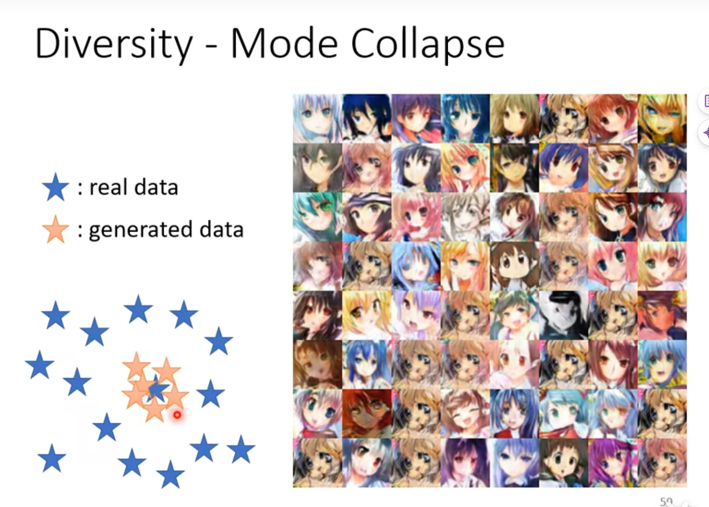这个问题是GAN结构自身的问题，很难避免，就算Google爆搜了参数，最后的解决方案也仅仅是在Mode collapse发生之前停下来用之前的model。
Diversity - Mode Dropping
只拟合到了一个subset。
你的产生出来的数据，只有真实数据的一部分，单纯看产生出来的数据，你可能会觉得还不错，而且分布的这个多样性也够，但你不知道真实数据的多样性的分布其实是更大的。
Diversity
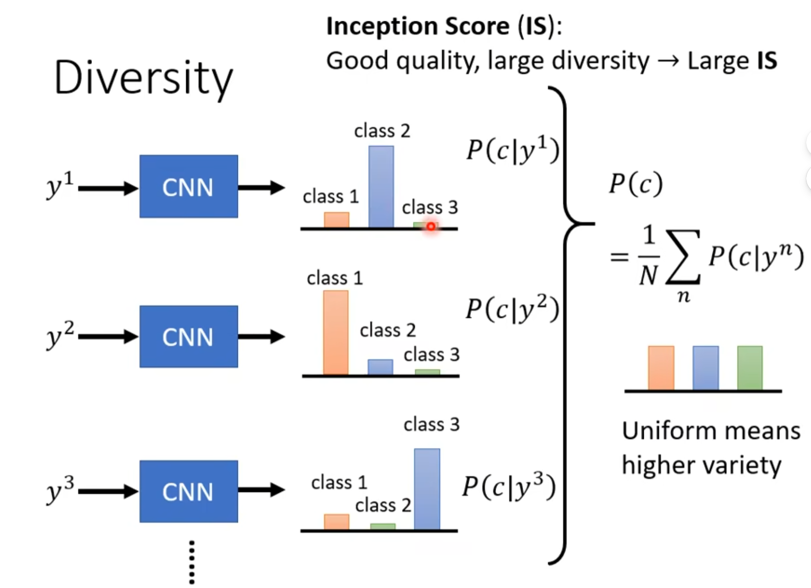对一批生成的图片，分类结果越平均越好，说明生成的图片越多样化。
对单一图片，分类结果越集中，反而说明生成质量越好。
Inception score(IS)
综合上述quality和diversity来看计算出成绩。但是对于HW不适用，因为二次元头像尽管可以各异，但是在IS看来都是人脸。
FID(Frechet Inception Distance)
我们取Softmax前最后一层layer的输出向量来比较，尽管经过softmax可能输出都是人脸，但是人脸的不同特征在最后一层layer向量得到表示中也会有区别。
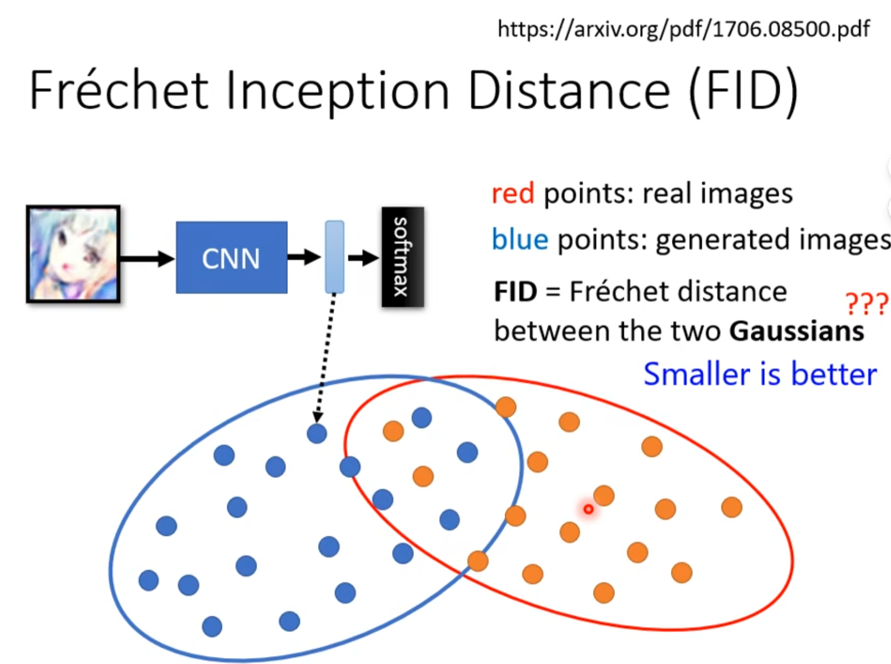我们分析数据，假设用 Gaussians Distribution来拟合，最后比较真实数据和生成数据的高斯距离。
第一个问题：当做Gaussians Distribution没有问题吗？
有问题，嗯，就是这样。
第二个问题：要产生高斯分布，需要大量的进行sample才行，需要一定的计算量。
第三个问题，评估生成图片如果和原始图片过分相似怎么办，如果是原始图片旋转翻转等等，虽然从数据来看很相似，但是不是我们希望的结果。
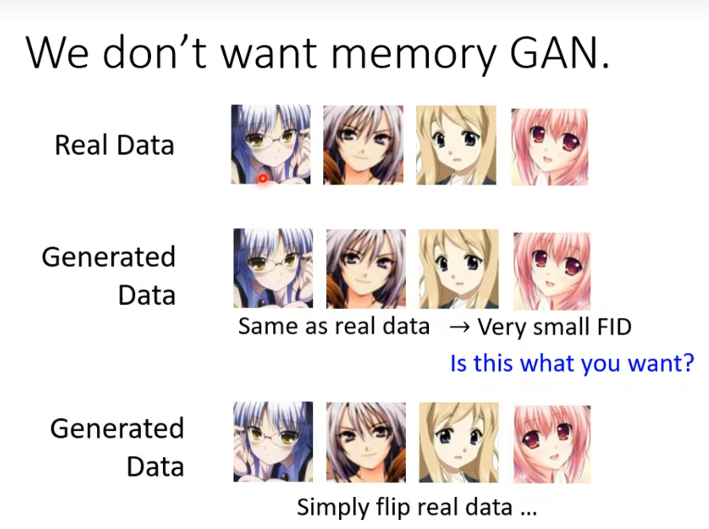Conditional Generation
我们可以给生成器一个条件，让生成器生成符合这个条件的图片。
一个最简单例子是给生成器一段文字，让生成器生成这段文字对应的图片。
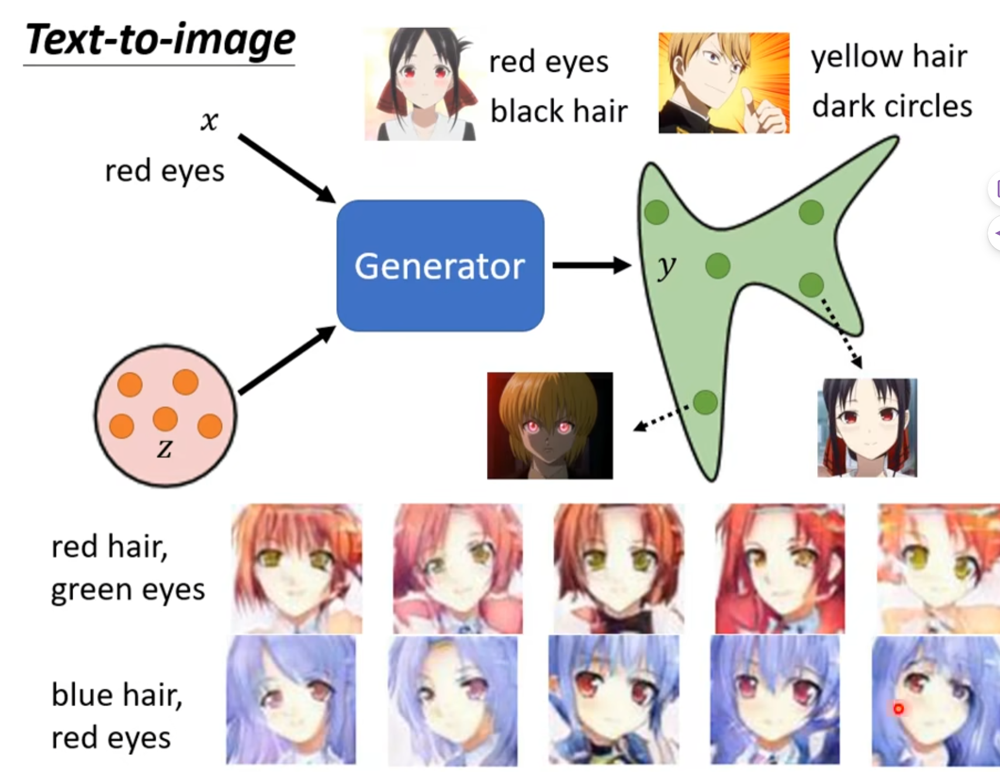传统的Discriminator只接受图片做分类，是无法体现额外的condition的，所以不关事Generator需要嵌合condition，Discriminator也需要嵌合condition。
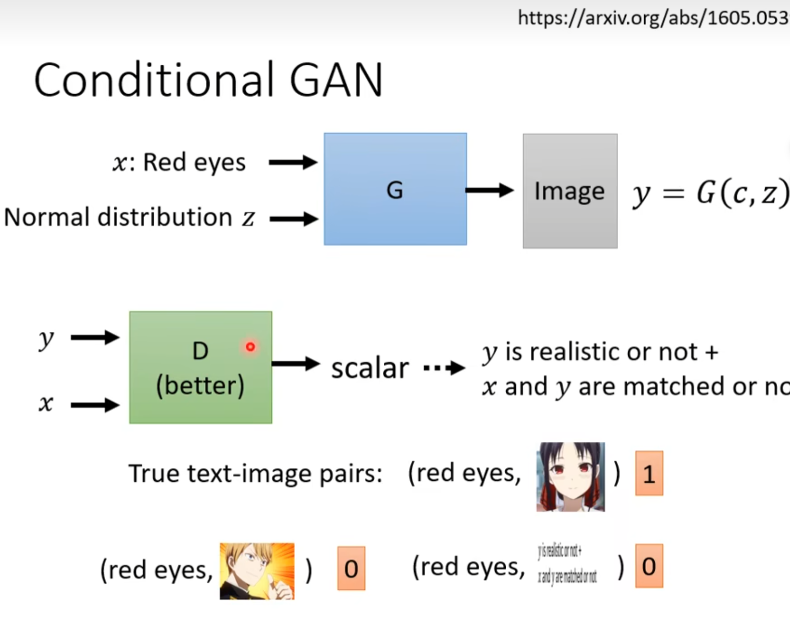所以我们需要实现弄好打量的正负图片文本对。
另一个例子是p2p。
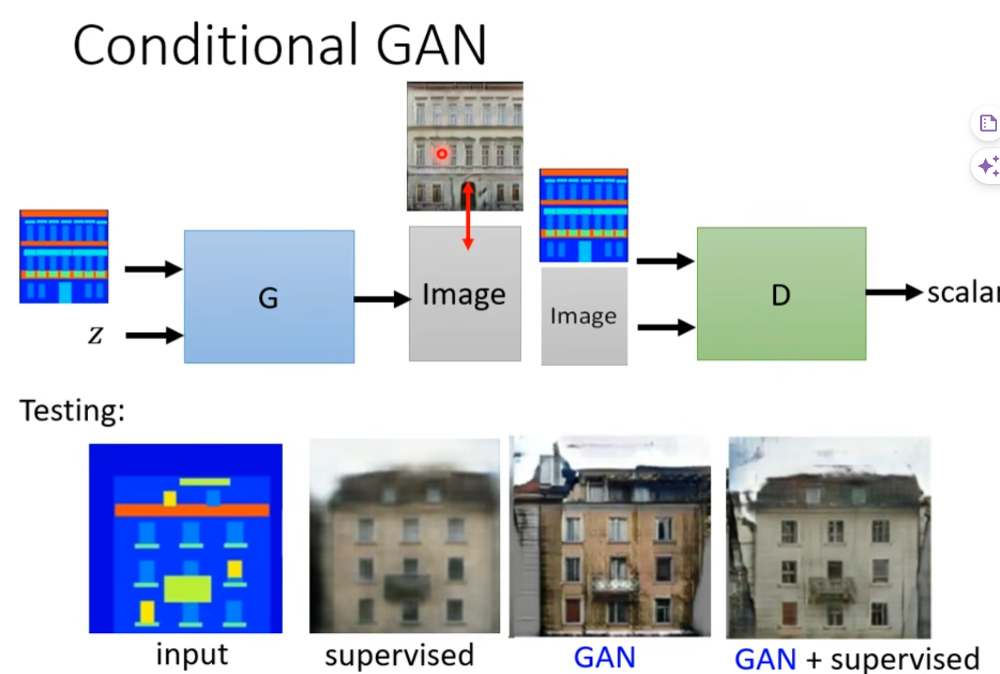监督学习：学习的很像，但是会模糊（就像之前游戏的例子，面对多种选择摇摆不定。
GAN：质量好，但是会多出一些东西，不如训练集的一些图像插件。
相结合的效果就比较好了（说起来容易，调参又是另一回事了）。
Learning from Unpaired Data
很多时候我们的训练需要批注或者标签，但是一些时候我们并没有且不易获得标签，比如风格迁移，写实风转换为二次元风格。这个例子就没有成对的例子。
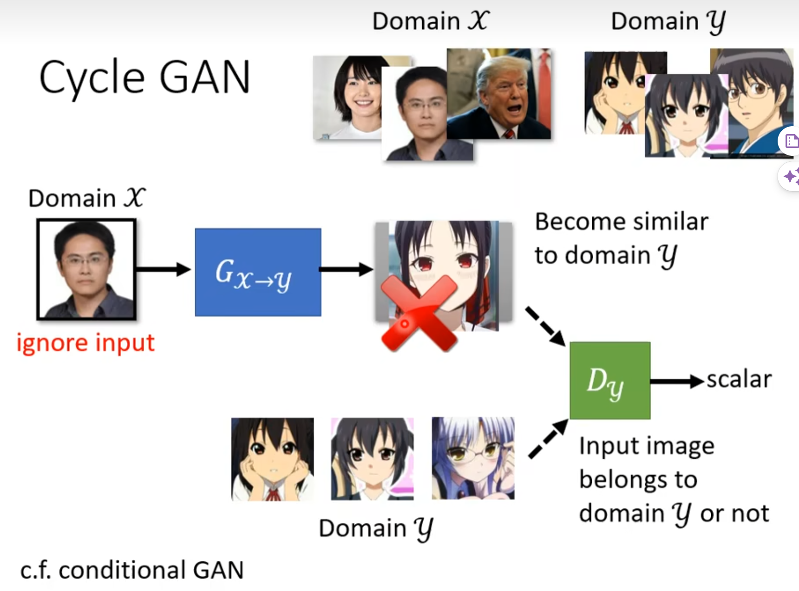现在我们没有成对的资料，甚至没办法使用conditional GAN，那么我们怎么办？
一种做法：Circle GAN
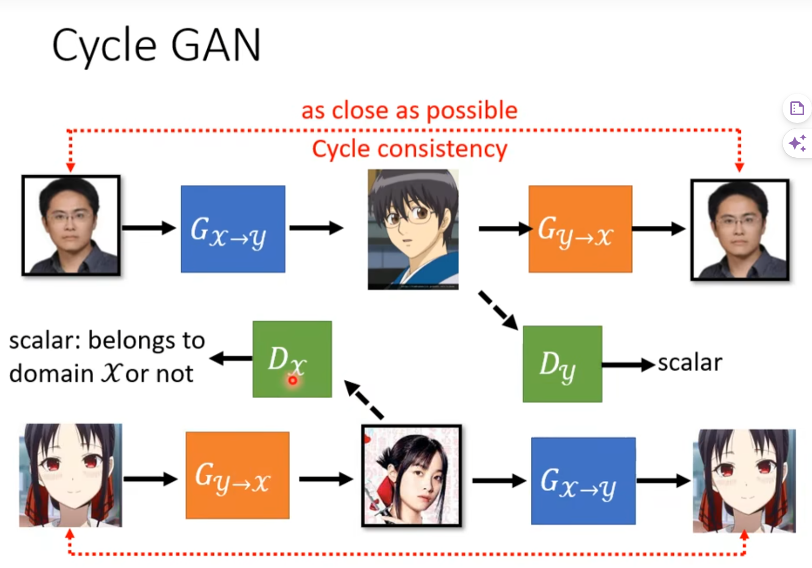有一点auto encoder的做法。
因为Discriminator就只能是个简单的分类器，为了保证Generator生成的图像与原始图像有关，我们添加一个网络，保证Generator生成的图像可以逆回去，用这种方式确保相关性。
加入了第二个生成器以后，对于前面这个第一个的生成器来说，它就不能够随便产生与输入没有关系的人脸了。因为如果它产生出来的人脸跟输入的人脸没有关系，那第二个生成器就无法把它还原回原来的 x 域的图片。所以对第一个生成器来说，为了要让第二个生成器能够成功还原原来的图片，它产生出来的图片就不能跟输入差太多，然后第二个生成器才能够还原回原来的输入。（其实仍然相当不科学，但是it works）